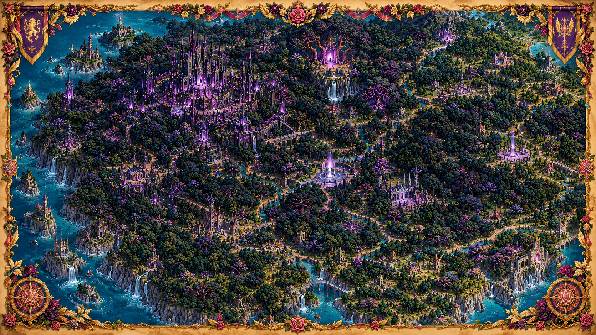

⬅ Retour au Royaume Rose

🏰 Cité Obsidienne
🌳 Arbre-Monde Pourpre
💜 Sanctuaire des Ombres
⛲ Fontaine des Âmes
🌊 Port de la Brume
🏞️ Cascades Nocturnes
✕
Forêt Noire
🌑 Forêt des Roses Noires
Cliquez sur un lieu pour découvrir les mystères de cette région.